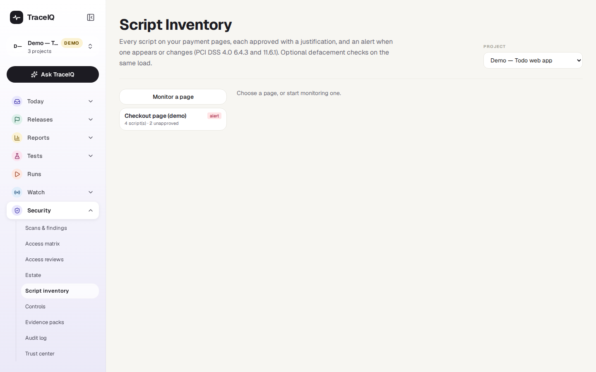
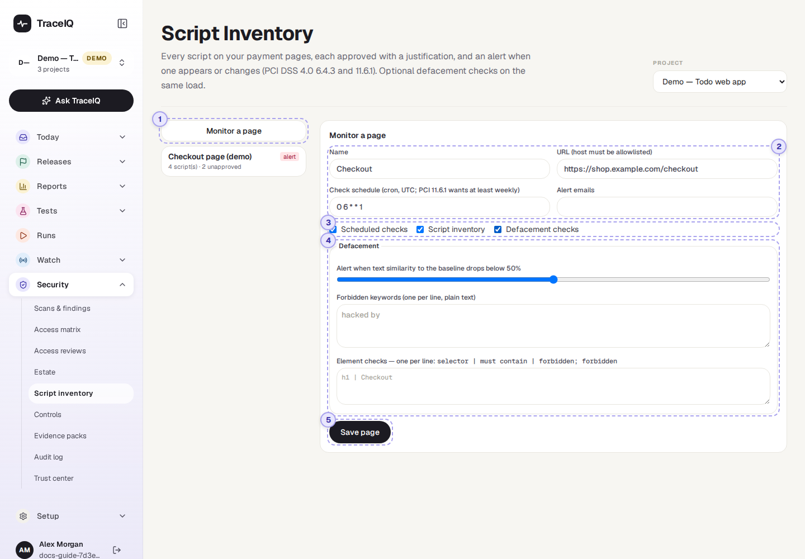
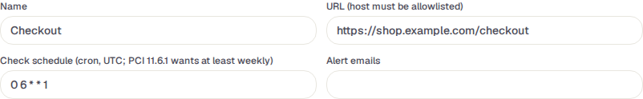
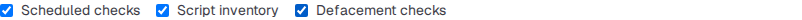
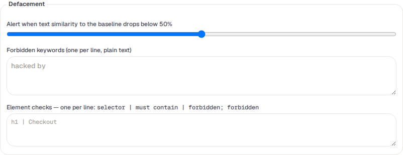
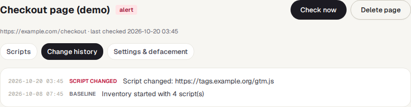

Script inventory
TraceIQ opens your most sensitive pages, such as checkout, on a schedule and writes down every script that runs there. Each script needs someone to approve it with a reason. When a new script appears or an approved one changes, you are warned. It can also watch the page's text for signs that someone has defaced it.
What it is for
A script is a piece of program code that a web page loads and runs in the visitor's browser: your own code, but often also code from other companies, for analytics, chat or payments. If an attacker manages to add a script, or change one at the supplier, it can quietly copy every card number typed on the page. This is called skimming (or a "Magecart" attack), and it is invisible to the customer.
The card-payment industry's security standard (PCI DSS 4.0) therefore asks for a list of every script on payment pages, a written reason for each one, a way to check each is unchanged (requirement 6.4.3), and a check at least once a week for unauthorised changes to those scripts and the page's security headers (11.6.1). This page does that, and answers "Is anything running on our payment page that we didn't approve?"
Security and compliance
Keep the script list and the reasons auditors ask for, with a weekly check.
Developers
See which scripts changed after a release, and approve the ones that should be there.
E-commerce teams
Hear quickly if the checkout page shows text it shouldn't.
Where to find it: in the sidebar, open Security → Script inventory. The page's own heading says Script Inventory.
A tour of the screen
The page opens on the list of pages the project watches; the demo's web project watches one checkout page:

The picture below shows the form behind Monitor a page, filled in for a checkout page with defacement checks switched on. The numbers match the sections below.

Monitored pages
The pages this project watches, each with its last result and the number of scripts (and how many are unapproved). Click one to open it; Monitor a page adds one. The Project menu at the top right is the same choice as the project picker in the sidebar.
| Result | What it means |
|---|---|
| ok | Nothing changed since the last check. |
| changed | Something harmless changed: a script disappeared, or a security header changed. |
| alert | A new script appeared, a script's content changed, or a defacement check failed. The alert people are told. |
| error | The check couldn't be done, for example the site is no longer on the allowed list or no test machine answered. The reason is shown on the page. |
| new | Not checked yet. |
The page to watch

- Name and URL (both required). The page's site must be on the project's allowed list (Scans & findings → Authorization); otherwise saving is refused.
- Check schedule: a cron expression in UTC. The standard
0 6 * * 1is every Monday at 06:00 UTC, which meets the weekly minimum. It can't be more often than once an hour. - Alert emails: who is emailed when the result is alert. The project's Slack or Teams channel is told too, if it has one.
What to check

- Scheduled checks: untick to check only when someone presses Check now.
- Script inventory: record every script (on by default).
- Defacement checks: also look at the page's text (off by default). Defacement is when an attacker changes what a page says, for example to their own message.
Defacement

The first check records the page's text as the baseline. Later checks compare against it:
- Similarity: alert when the text is less than this much like the baseline (standard 50%).
- Forbidden keywords: words that should never be on the page, such as "hacked by". One per line.
- Element checks: one per line, a part of the page (a selector), the text it must contain, and words it must not contain, separated by
|. For exampleh1 | Checkout.
All of these are plain text comparisons, ignoring capital letters. A failed check is a high-severity Possible defacement finding. When you have changed the page on purpose, Accept current content as baseline (on the page's view) starts the comparison afresh.
Save page
Nothing is kept until you press Save page. The first check happens at the next time in the schedule; press Check now on the saved page to run it at once.
A monitored page
A saved page shows its result, when it was last checked, and the buttons Check now and Delete page (which asks first and deletes its inventory and history). It has three tabs:
- Scripts: one row per script, unapproved ones first. The script is its address, or "inline script" for code written into the page itself; it is marked first party (from your own site) or third party, with the day it was first seen. SHA-384 is the script's fingerprint: any change to the code changes it. SRI says whether the page itself tells the browser to check that fingerprint ("none" means it doesn't). Approval is approved or unapproved. Tick Include removed scripts to see ones that have gone. Security headers last seen lists the protective headers the page sent.
- Change history: every script added, changed, removed or approved, every header change and every defacement alert, with its time.
- Settings & defacement: the same form as above.
![Checkout page (demo), result alert, https://example.com/checkout, last checked 2026-10-20, with Check now and Delete page buttons and the tabs Scripts, Change history, Settings and defacement. The Scripts tab lists four scripts: https://tags.example.org/gtm.js (third party) and an inline script, both unapproved with an Approve… link; https://payments.example.net/v3/checkout.js (third party) and https://example.com/static/app.js (first party), both approved with their justification and a Withdraw approval link. Each has the start of its SHA-384 fingerprint and SRI none. At the bottom, Security headers last seen](../media/security/script-inventory/monitored-page.png)

Watch it in use
How to…
…start watching your checkout page
- Make sure the site is on the project's allowed list (Scans & findings → Authorization, project admin).
- Press Monitor a page, type a name and the page's address, and add the alert email addresses.
- Press Save page, then Check now. The first check records every script; that first list doesn't raise alerts.
- Approve each script on the Scripts tab (below).
…approve a script
- On the Scripts tab, find the unapproved script and press Approve….
- Write why the page needs it, for example "Card form from our payment provider". At least 10 characters.
- Press Approve script. The reason is shown under the script and recorded in the Audit log.
…deal with an alert
- Open the page and look at Change history to see what changed.
- If a new or changed script is expected (a release, a supplier update), approve it again with a reason.
- If not, treat it as a security incident: remove the script from the page and find out how it got there.
Good to know
- A changed script loses its approval. The approval was for the code someone looked at, so when a script's fingerprint changes, it goes back to unapproved and the page raises an alert.
- Unapproved scripts are findings. Each one is a finding in Scans & findings (medium for third-party scripts, low for your own) until it is approved or goes away.
- Scripts that hide are caught too. A script that adds another script and then removes itself still shows up, because TraceIQ also watches what the page downloads, not only what is in the page at the end.
- It only looks. The check is an ordinary page visit. Inline scripts are stored only as fingerprints; cookies are never stored; page text is kept only when defacement checks are on, with secrets removed.
- A check gives up after 15 minutes and the page shows the error.
- Who can do what. Anyone with access to the project can look. Adding, changing, checking and deleting pages, and approving or withdrawing approvals, need the editor role.
Related pages
Controls
The next page in this guide: your compliance promises, checked against TraceIQ's records.
Estate
Your domains and certificates, checked from the outside.
Scans & findings
Where unapproved scripts and defacements are tracked, and where the allowed list is set.
Audit log
Who approved which script, when, and why.